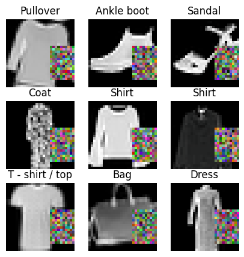
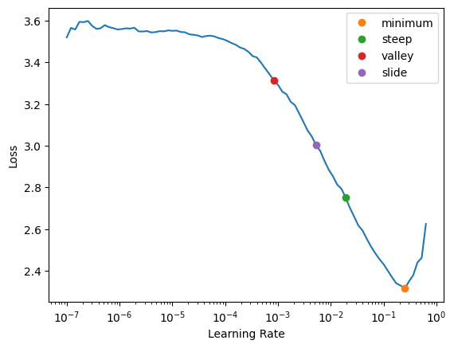
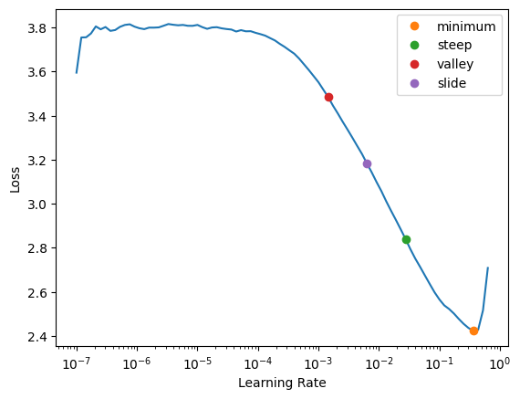
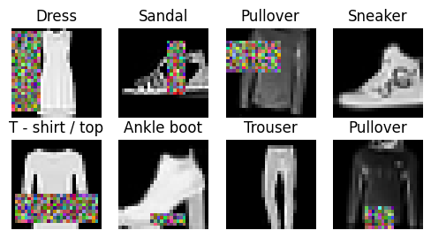
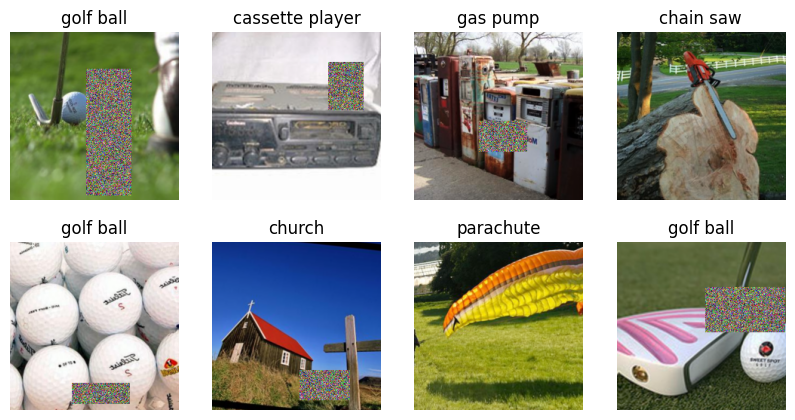
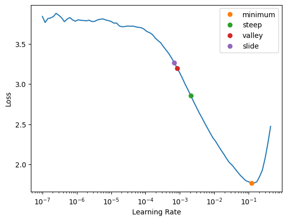

import torch
from datasets import load_dataset, load_dataset_builderUsing Hugging Face Image Datasets with fastai
Computer Vision
Hugging Face
We’ll look at different ways of using fastai’s data pipeline with Hugging Face image datasets and find an efficient option.
Overview and Setup
The goal of this post is to find an efficient way of using fastai’s data pipeline tools when working with Hugging Face datasets. As it turns out, the DataBlock and mid-level APIs have some drawbacks in this context, and we’ll see that a better option is to use the low-level API: fastai’s custom DataLoader and Pipeline classes. If you just want to see how to use the low-level API, feel free to skip to that section.
The list of Python packages and specific versions used to make this post are in the table below.
| Package | Version |
|---|---|
| python | 3.9.16 |
| PyTorch | 2.2.0+cu121 |
| fastai | 2.7.14 |
| timm | 0.9.12 |
| datasets | 2.15.0 |
Important
The latest version of the datasets library at time of writing is 2.16.1, but some of the dataset metadata was missing when using both versions 2.16.0 and 2.16.1.
Get the Metadata
We’ll be using the Fashion-MNIST dataset in our analysis. It’s a drop-in replacement for the original MNIST dataset. We’ll use the version of Fashion-MNIST from the Hugging Face Hub. One nice feature of Hugging Face’s datasets library is the DatasetBuilder class that contains metadata for a given dataset. You can use load_dataset_builder to download a DatasetBuilder for any dataset on the Hugging Face Hub before downloading the dataset itself.
fashion_mnist_builder = load_dataset_builder("fashion_mnist")The metadata we want is stored in the builder’s info attribute.
fashion_mnist_info = fashion_mnist_builder.infoFor example, there’s a written description of the dataset…
print(fashion_mnist_info.description)Fashion-MNIST is a dataset of Zalando's article images—consisting of a training set of
60,000 examples and a test set of 10,000 examples. Each example is a 28x28 grayscale image,
associated with a label from 10 classes. We intend Fashion-MNIST to serve as a direct drop-in
replacement for the original MNIST dataset for benchmarking machine learning algorithms.
It shares the same image size and structure of training and testing splits.
… a dictionary of pre-defined splits in the dataset, with relevant metadata…
fashion_mnist_info.splits{'train': SplitInfo(name='train', num_bytes=31296607, num_examples=60000, shard_lengths=None, dataset_name='fashion_mnist'),
'test': SplitInfo(name='test', num_bytes=5233810, num_examples=10000, shard_lengths=None, dataset_name='fashion_mnist')}… and a dictionary of all of the columns in the dataset, with their datatypes and relevant metadata.
fashion_mnist_info.features{'image': Image(decode=True, id=None),
'label': ClassLabel(names=['T - shirt / top', 'Trouser', 'Pullover', 'Dress', 'Coat', 'Sandal', 'Shirt', 'Sneaker', 'Bag', 'Ankle boot'], id=None)}The ClassLabel object in info.features has a convenient int2str method to convert integer labels to the strings that they represent.
fashion_mnist_label_func = fashion_mnist_info.features["label"].int2str
num_classes = len(fashion_mnist_info.features["label"].names)
{i: fashion_mnist_label_func(i) for i in range(num_classes)}{0: 'T - shirt / top',
1: 'Trouser',
2: 'Pullover',
3: 'Dress',
4: 'Coat',
5: 'Sandal',
6: 'Shirt',
7: 'Sneaker',
8: 'Bag',
9: 'Ankle boot'}Get the Data
We can also download and load the dataset using our DatasetBuilder.
fashion_mnist_builder.download_and_prepare()
fashion_mnist = fashion_mnist_builder.as_dataset()
fashion_mnistDatasetDict({
train: Dataset({
features: ['image', 'label'],
num_rows: 60000
})
test: Dataset({
features: ['image', 'label'],
num_rows: 10000
})
})The splits, features, and number of training and test instances all match the metadata that we looked at in the previous section. We’ll discard the provided test set and divide the training set into a new training and validation set using the Hugging Face Dataset class’s built-in train_test_split method.
fashion_mnist = fashion_mnist["train"].train_test_split(test_size=0.2)
fashion_mnistDatasetDict({
train: Dataset({
features: ['image', 'label'],
num_rows: 48000
})
test: Dataset({
features: ['image', 'label'],
num_rows: 12000
})
})The DataBlock API
One commonly used data processing API in the fastai library is the DataBlock API. We’ll need to do some additional pre-processing steps when working with a Hugging Face Dataset. The procedure we use is taken from an example in the documentation for blurr, a library that makes it easy to use Hugging Face transformers with fastai. The specific example I’m referencing is the second example in the linked “Prepare the datasets” section.
Step 1: Record the indices of the validation set.
num_train, num_valid = len(fashion_mnist["train"]), len(fashion_mnist["test"])
valid_idxs = list(range(num_train, num_train + num_valid))Step 2: Concatenate the training and validation sets into one dataset.
We’ll use the concatenate_datasets function from the datasets library.
from datasets import concatenate_datasets
concat_fashion_mnist = concatenate_datasets([fashion_mnist["train"],
fashion_mnist["test"]])Step 3: Pass an IndexSplitter when creating our DataBlock so that it knows which instances go in the training and validation sets.
from fastai.vision.all import (
DataBlock, ImageBlock, CategoryBlock, IndexSplitter, CropPad,
RandomCrop, Normalize, imagenet_stats, Rotate, RandomErasing
)
def get_x(item):
return item["image"]
def get_y(item):
return fashion_mnist_label_func(item["label"])
dblock = DataBlock(
blocks=(ImageBlock, CategoryBlock),
get_x=get_x,
get_y=get_y,
splitter=IndexSplitter(valid_idx=valid_idxs),
item_tfms=[CropPad(32),
RandomCrop(28)],
batch_tfms=[Normalize.from_stats(*imagenet_stats),
Rotate(),
RandomErasing()],
)Now we can create our DataLoaders.
fashion_mnist_dls = dblock.dataloaders(concat_fashion_mnist, bs=512)As usual, we can use fastai’s conveniences like show_batch.
fashion_mnist_dls.show_batch(figsize=(5, 5))
Then we can create a Learner and fine-tune a model on our dataset like normal.
from fastai.vision.all import (
vision_learner, resnet18, accuracy,
minimum, steep, valley, slide
)
fashion_mnist_learn = vision_learner(fashion_mnist_dls, resnet18, metrics=accuracy)
lrs = fashion_mnist_learn.lr_find(suggest_funcs=(minimum, steep, valley, slide))
The graph seems to be steepest at the point marked steep, so we’ll take that as our learning rate.
fashion_mnist_learn.fine_tune(3, lrs.steep)| epoch | train_loss | valid_loss | accuracy | time |
|---|---|---|---|---|
| 0 | 1.324347 | 0.824672 | 0.700250 | 00:15 |
| epoch | train_loss | valid_loss | accuracy | time |
|---|---|---|---|---|
| 0 | 0.608801 | 0.476613 | 0.848417 | 00:12 |
| 1 | 0.468581 | 0.308588 | 0.882750 | 00:11 |
| 2 | 0.400869 | 0.285220 | 0.893000 | 00:11 |
Great!
The Downside of the DataBlock API with a Hugging Face Dataset
Everything looks fine on the surface, but there’s a hidden cost of using the DataBlock API with a Hugging Face Dataset: the time it takes to create the DataLoaders. Let’s re-run our DataBlock pipeline and time it.
import time
start_time = time.monotonic()
# Step 1
num_train, num_valid = len(fashion_mnist["train"]), len(fashion_mnist["test"])
valid_idxs = list(range(num_train, num_train + num_valid))
# Step 2
concat_fashion_mnist = concatenate_datasets([fashion_mnist["train"],
fashion_mnist["test"]])
# Step 3
fashion_mnist_dblock = DataBlock(
blocks=(ImageBlock, CategoryBlock),
get_x=get_x,
get_y=get_y,
splitter=IndexSplitter(valid_idx=valid_idxs),
item_tfms=[CropPad(32),
RandomCrop(28)],
batch_tfms=[Normalize.from_stats(*imagenet_stats),
Rotate(),
RandomErasing()],
)
# instantiate the dataloaders
fashion_mnist_dls = fashion_mnist_dblock.dataloaders(concat_fashion_mnist, bs=512)
end_time = time.monotonic()
print("Time elapsed:", round(end_time - start_time, 1), "seconds")Time elapsed: 18.9 secondsThat’s too long for such a small dataset, and if we create a DataBlock with a bigger dataset like Imagenette, the time required to instantiate the DataLoaders will be even longer. Let’s first download the dataset…
imagenette = load_dataset("johnowhitaker/imagenette2-320")Many thanks to Jonathan Whitaker for uploading this version of Imagenette to the Hugging Face Hub!
… then split the provided training set into a training and validation set…
imagenette = imagenette["train"].train_test_split(test_size=0.2)
imagenetteDatasetDict({
train: Dataset({
features: ['image', 'label'],
num_rows: 10715
})
test: Dataset({
features: ['image', 'label'],
num_rows: 2679
})
})… then set up some new functions to use in our DataBlock.
imagenette_label_dict = dict(
n01440764='tench',
n02102040='English springer',
n02979186='cassette player',
n03000684='chain saw',
n03028079='church',
n03394916='French horn',
n03417042='garbage truck',
n03425413='gas pump',
n03445777='golf ball',
n03888257='parachute'
)
imagenette_label_func = imagenette["train"].info.features["label"].int2str
def imagenette_get_y(item):
label = imagenette_label_func(item["label"])
return imagenette_label_dict[label]The label dictionary was taken from fastai’s “Training Imagenette” tutorial.
Now we’ll run the exact same pre-processing steps, create a DataBlock and DataLoaders, time the whole process with time.monotonic, and keep track of memory usage the %%memit magic function.
%load_ext memory_profilerfrom fastai.vision.all import Resize, aug_transforms%%memit
start_time = time.monotonic()
# Step 1
num_train, num_valid = len(imagenette["train"]), len(imagenette["test"])
valid_idxs = list(range(num_train, num_train + num_valid))
# Step 2
concat_imagenette = concatenate_datasets([imagenette["train"],
imagenette["test"]])
# Step 3
imagenette_dblock = DataBlock(
blocks=(ImageBlock, CategoryBlock),
get_x=get_x,
get_y=imagenette_get_y,
splitter=IndexSplitter(valid_idx=valid_idxs),
item_tfms=[Resize(460)],
batch_tfms=[Normalize.from_stats(*imagenet_stats),
*aug_transforms(size=224, min_scale=0.75),
RandomErasing()],
)
# instantiate the dataloaders
imagenette_dls = imagenette_dblock.dataloaders(concat_imagenette, bs=64)
end_time = time.monotonic()
print("Time elapsed:", round(end_time - start_time, 1), "seconds")Time elapsed: 35.6 seconds
peak memory: 22003.21 MiB, increment: 15222.07 MiBThat’s a big memory increment! It looks like we need a different approach to using Hugging Face image datasets with fastai.
Image Paths
The Hugging Face datasets documentation indicates that, when loading a dataset that’s stored locally, we can get back paths instead of decoded images by using Dataset’s cast_column method. However, if you’re downloading a dataset from the Hugging Face Hub, as we’re doing in this post, you may get the images in a compressed format instead of as individual files, and this option won’t work.
imagenette_with_paths = imagenette.cast_column("image", datasets.Image(decode=False))
list(imagenette_with_paths["train"][0]["image"].keys())['bytes', 'path']imagenette_with_paths["train"][0]["image"]["path"] is NoneTrueThe Mid-Level API
The mid-level API has the same problem as the DataBlock API. Instantiating a fastai Datasets or TfmdLists object using Imagenette has the same problems as the DataBlock API, so we need to pass to fastai’s low-level API.
The Low-Level API
A faster way to use a Hugging Face image dataset with fastai is via the low-level API: Pipelines of fastai Transforms and fastai’s custom DataLoader class, which is compatible with PyTorch DataLoaders but has some additional fastai-flavored features. We will also need to define some custom fastai-style transforms to handle our dataset format. Let’s start by working with Fashion-MNIST.
We’ll start with some data conversion transforms. Hugging Face datasets return indexed items as dictionaries…
sample_input = imagenette["train"][0]
sample_input{'image': <PIL.JpegImagePlugin.JpegImageFile image mode=RGB size=320x484>,
'label': 7}… while fastai transforms expect tuples, so we’ll need a transform to convert formats. Instead of writing a __call__ method, fastai transforms need an encodes method.
from fastai.vision.all import Transform
class DictToTuple(Transform):
order = -10 # do this before everything else
split_idx = None # apply to both training and validation sets
def encodes(self, x):
return x["image"], x["label"]We’re relying on the fact that both of the datasets in this post use the column names image and label. A more flexible design would pass the relevant column names at instantiation or automatically extract them from the dataset if possible.
Let’s make sure our transform does what we want it to do.
dict_to_tuple = DictToTuple()
tuple_input = dict_to_tuple(sample_input)
tuple_input(<PIL.JpegImagePlugin.JpegImageFile image mode=RGB size=320x484>, 7)Instead of calling the encodes method directly, we just use the instantiated Transform like a normal Python callable.
Next, fastai’s image transforms work best with its custom PILImage class, so we’ll need another transform to convert our images to that format.
from PIL import Image
from fastai.vision.all import PILImage
class ConvertImage(Transform):
order = -9 # do this after DictToTuple
split_idx = None # apply to both training and validation sets
def encodes(self, x: Image.Image):
return PILImage.create(x)When a fastai Transform is passed a tuple as input, fastcore’s type dispatch system applies it to individual elements of the tuple that match the type annotation of the encodes method. For example, ConvertImage will only be applied to PIL.Image.Image objects, and our target integer labels will be left alone.
convert_image = ConvertImage()
image_converted = convert_image(tuple_input)
image_converted(PILImage mode=RGB size=320x484, 7)Finally, we’ll write a transform to convert the integer labels in our dataset to fastai TensorCategory labels, and we’ll make sure they know how to decode and display themselves in figures later on by writing a decodes method.
from fastai.vision.all import TensorCategory
class ConvertCategory(Transform):
order = -8 # do this after ConvertImage
split_idx = None # apply to both the training and validation sets
def __init__(self, label_func):
self.label_func = label_func
def encodes(self, x: int):
return TensorCategory(x)
def decodes(self, x: TensorCategory):
return self.label_func(x)As before, fastai’s type dispatching ensures that this transform will only be applied to the integer labels and will leave the images alone.
def label2cat(x):
decoded_label = imagenette_label_func(x.item())
return imagenette_label_dict[decoded_label]
convert_category = ConvertCategory(label2cat)
category_converted = convert_category(image_converted)
category_converted(PILImage mode=RGB size=320x484, TensorCategory(7))The decodes method also uses type dispatching.
category_decoded = convert_category.decode(category_converted)
category_decoded(PILImage mode=RGB size=320x484, 'gas pump')Instead of calling the decodes method of the Transform directly, we call the decode method (without the s).
I could not get fastai’s RandomErasing to work with the low-level API, so we’ll convert the implementation in timm to a fastai Transform.
# make sure not to override fastai's RandomErasing class
import timm.data.random_erasing as random_erasing
# fastai's ToTensor transform converts PILImages to fastai TensorImages
from fastai.vision.all import TensorImage
class RandomErase(Transform):
order = 100 # do this after Normalize
split_idx = 0 # apply only to the training set
def __init__(self, p=0.5, mode='pixel', max_count=1):
device = ('cuda' if torch.cuda.is_available()
else 'mps' if torch.backends.mps.is_available()
else 'cpu')
self.tfm = random_erasing.RandomErasing(
probability=p, mode=mode, device=device, max_count=max_count
)
def encodes(self, x: TensorImage):
return self.tfm(x)We’ll always want some specific transforms in our data pre-processing, but we might want to experiment with including or excluding others. To make that easier, we’ll design our data pipelines to be easily extensible. The transforms in a fastai Pipeline are automatically ordered by their order class attributes, which makes extensibility much easier to implement.
from fastai.vision.all import ToTensor, IntToFloatTensor, Pipeline
def item_tfms_pipeline(split_idx, label_func, extra_tfms=None):
tfms = [DictToTuple(),
ConvertImage(),
ConvertCategory(label_func),
ToTensor()]
if extra_tfms is not None:
tfms.extend(extra_tfms)
return Pipeline(tfms, split_idx=split_idx)
def batch_tfms_pipeline(split_idx, extra_tfms=None):
tfms = [IntToFloatTensor()]
if extra_tfms is not None:
tfms.extend(extra_tfms)
return Pipeline(tfms, split_idx=split_idx)Now we can write some functions that generate a custom DataLoaders.
from fastai.vision.all import DataLoader, DataLoaders
def get_dl(ds, bs, shuffle, device, label_func, item_tfms=None, batch_tfms=None):
return DataLoader(
ds, bs=bs, shuffle=shuffle,
after_item=item_tfms_pipeline(
split_idx=int(not shuffle),
label_func=label_func,
extra_tfms=item_tfms
),
after_batch=batch_tfms_pipeline(
split_idx=int(not shuffle),
extra_tfms=batch_tfms
),
device=device,
num_workers=8,
)
def get_dls(ds_dict, bs, item_tfms, batch_tfms, label_dict=None):
def label_func(x):
result = ds_dict["train"].info.features["label"].int2str(x)
if label_dict is not None:
result = [label_dict[o] for o in result]
return result
device = ('cuda' if torch.cuda.is_available()
else 'mps' if torch.backends.mps.is_available()
else 'cpu')
dls = DataLoaders(
*[get_dl(ds_dict[k], bs=bs, shuffle=(k=="train"), device=device,
label_func=label_func, item_tfms=item_tfms, batch_tfms=batch_tfms)
for k in ds_dict],
)
# need to set this or vision_learner complains
dls.c = len(ds_dict["train"].info.features["label"].names)
return dlsWe’ve designed things so that the syntax is familiar to what we used with DataBlocks.
fashion_mnist_low_level_dls = get_dls(
ds_dict=fashion_mnist,
bs=512,
item_tfms=[CropPad(32),
RandomCrop(28)],
batch_tfms=[Normalize.from_stats(*imagenet_stats),
Rotate(),
RandomErase()]
)Now let’s train a model using our custom DataLoaders and compare with the DataBlock API.
from fastai.vision.all import CrossEntropyLossFlat
fashion_mnist_low_level_learn = vision_learner(
dls=fashion_mnist_low_level_dls,
arch=resnet18,
loss_func=CrossEntropyLossFlat(),
metrics=accuracy
)
lrs = fashion_mnist_low_level_learn.lr_find(suggest_funcs=(minimum, steep, valley, slide))
As usual, we’ll use the learning rate given by the point marked steep.
fashion_mnist_low_level_learn.fine_tune(3, lrs.steep)| epoch | train_loss | valid_loss | accuracy | time |
|---|---|---|---|---|
| 0 | 1.360952 | 0.741448 | 0.745417 | 00:20 |
| epoch | train_loss | valid_loss | accuracy | time |
|---|---|---|---|---|
| 0 | 0.596736 | 0.389657 | 0.862917 | 00:19 |
| 1 | 0.468772 | 0.316965 | 0.880583 | 00:16 |
| 2 | 0.383638 | 0.258381 | 0.902500 | 00:17 |
The training time per epoch is a little longer, but we still save time overall when we take into account the time needed to instantiate the DataLoaders. Let’s time the DataLoaders instantiation so we can compare the low-level API with the DataBlock API:
start_time = time.monotonic()
fashion_mnist_low_level_dls = get_dls(
ds_dict=fashion_mnist,
bs=512,
item_tfms=[CropPad(32),
RandomCrop(28)],
batch_tfms=[Normalize.from_stats(*imagenet_stats),
Rotate(),
RandomErase()]
)
end_time = time.monotonic()
print("Time elapsed:", round(end_time - start_time, 3), "seconds")Time elapsed: 0.003 secondsMuch faster!
The fastai DataLoader class doesn’t have a built-in show_batch method, but we can easily patch one in with fastcore’s @patch decorator. There is already a show_batch function in fastai, and patch takes advantage of the type dispatch system mentioned above to add show_batch as a method to the DataLoaders class.
from operator import itemgetter
from fastcore.all import patch, mapt
from fastai.vision.all import show_images
@patch
def show_batch(self: DataLoaders, split='train', max_n=8, figsize=(6, 3)):
batch = getattr(self, split).one_batch()
slicer = itemgetter(slice(max_n))
batch = mapt(slicer, batch)
batch = getattr(self, split).after_batch.decode(batch)
batch = getattr(self, split).after_item.decode(batch)
images, labels = batch # unpacking for clarity
show_images(images, nrows=2, figsize=figsize, titles=labels)
fashion_mnist_low_level_dls.show_batch()
A fastai Pipeline has its own decode method that calls the decode methods of the constituent transforms in the appropriate reversed order. Each dataloader in a fastai DataLoaders has its own after_item and after_batch pipelines.
Now let’s see how long it takes to instantiate a DataLoaders and train a model on Imagenette with the low-level API. We’ll need an extra custom Transform to convert the grayscale images in Imagenette to RGB format.
class ConvertToRGB(Transform):
order = 6 # after ToTensor
split_idx = None # apply to both the training and validation sets
def encodes(self, x: TensorImage):
if x.shape[0] == 3:
return x
return x.repeat(3, 1, 1)We’ll also measure the memory usage when instantiating the DataLoaders.
%%memit
start_time = time.monotonic()
imagenette_low_level_dls = get_dls(
ds_dict=imagenette,
bs=64,
item_tfms=[Resize(460), ConvertToRGB()],
batch_tfms=[Normalize.from_stats(*imagenet_stats),
*aug_transforms(size=224, min_scale=0.75),
RandomErase()],
label_dict=imagenette_label_dict
)
end_time = time.monotonic()
print("Elapsed time:", round(end_time - start_time, 3), "seconds")Elapsed time: 0.006 seconds
peak memory: 22117.25 MiB, increment: 0.00 MiBMuch faster, and we’re not using any additional memory!
We can also look at a batch of Imagenette images using our patched-in show_batch method for DataLoaders.
imagenette_low_level_dls.show_batch(figsize=(10, 5))
Now let’s fine-tune a model.
imagenette_low_level_learn = vision_learner(
dls=imagenette_low_level_dls,
arch=resnet18,
loss_func=CrossEntropyLossFlat(),
metrics=accuracy
)
lrs = imagenette_low_level_learn.lr_find(suggest_funcs=(minimum, steep, valley, slide))
As usual, we’ll take the point marked steep as our learning rate.
imagenette_low_level_learn.fine_tune(3, lrs.steep)| epoch | train_loss | valid_loss | accuracy | time |
|---|---|---|---|---|
| 0 | 0.334781 | 0.070108 | 0.979097 | 00:23 |
| epoch | train_loss | valid_loss | accuracy | time |
|---|---|---|---|---|
| 0 | 0.197842 | 0.070056 | 0.980590 | 00:24 |
| 1 | 0.143560 | 0.058491 | 0.983949 | 00:23 |
| 2 | 0.101656 | 0.048196 | 0.986562 | 00:24 |
Just like with Fashion-MNIST, the training time per epoch for Imagenette is longer with the low-level API than with the DataBlock API. However, we save so much time and memory usage when creating the DataLoaders with the low-level API that it wins by default. Our data pipeline is also still quite flexible and extensible for working with Hugging Face datasets, so there’s not much downside.